전자산업기사 (2020-08-22 기출문제)
1과목: 전자회로
1. 트랜지스터를 스위치 회로로 사용할 때 OFF스위치에 적합한 영역은?
- 포화영역
- 순방향 활성영역
- 역방향 활성영역
- 차단영역
(정답률: 75%)

2. 다음 PCM 블록도에서 빈칸 A에 들어가는 회로는?
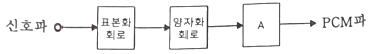
- 부호화 회로
- 비교기 회로
- 증폭 회로
- 필터 회로
(정답률: 79%)
3. 회로에서 Vi = 1V일 때 전류 IL은 몇 mA 인가?
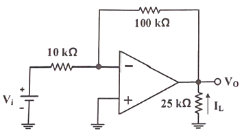
- -0.4
- -0.1
- 0.1
- 0.4
(정답률: 50%)
4. 다음 회로의 입력 V1 = 1V와 V2 = 2V에 대한 출력 Vout는 몇 V 인가? (단, R1=R2=1kΩ, R3=R4=5kΩ 이다.)
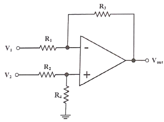
- 15
- -15
- 5
- -5
(정답률: 53%)
5. 공진회로에서 공진주파수(f0)와 대역폭(BW) 및 선택도(Q)의 관계식으로 옳은 것은?
- BW = Q/f0
- BW = f0+Q
- BW = f0/Q
- BW = f0-Q
(정답률: 62%)
6. 다음 회로에서 VB가 2V 이고, V1이 진폭 4V의 정현파일 때, 출력 V2의 파형의 설명으로 가장 적절한 것은?
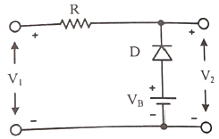
- V1의 파형에서 2 V 이하 부분이 잘린다.
- V1의 파형에서 2 V 이상 부분이 잘린다.
- V1과 같은 파형이다.
- V1보다 진폭이 커진다.
(정답률: 63%)
7. 이미터 폴로어 회로를 2단 구성하여 만든 달링톤 회로의 특징으로 틀린 것은?
- 전류이득이 더욱 크게 증가한다.
- 입력저항이 더욱 크게 증가한다.
- 출력저항이 더욱 크게 증가한다.
- 전압이득이 1보다 낮아진다.
(정답률: 49%)
8. 다음 중 FET의 특징에 대한 설명 중 틀린 것은?
- BJT 보다 잡음 특성이 좋다.
- 전류 제어 방식이다.
- BJT 보다 입력 임피던스가 높다.
- BJT 보다 이득-대역폭의 곱이 작다.
(정답률: 56%)
9. 다음 중 전압 제어 전압 전원(Voltage controlled voltage source) 귀한 구성의 특징으로 틀린 것은?
- 입력 임피던스 증가
- 출력 임피던스 증가
- 주파수 대역폭 증가
- 비직선 일그러짐 감소
(정답률: 55%)
10. Si 다이오드에 순방향전류를 흐르게 하려면 약 몇 V 이상 전압을 인가해야 하는가?
- 0.3
- 0.7
- 1
- 1.4
(정답률: 76%)
11. 회로(a)와 입ㆍ출력 전압특성(b)이 다음과 같을 때, 포화영역에서 콜렉터 전류 Ic는 몇 mA 인가? (단, RC = 1 Kohm이다.)
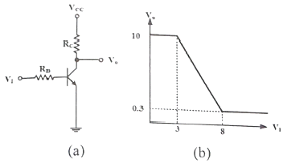
- 2.7
- 5.7
- 7.7
- 9.7
(정답률: 56%)
12. 초크 입력형과 비교한 콘덴서 입력형 회로의 특징이 아닌 것은?
- 첨두 역전압(PIV)이 높다.
- 전압변동률이 크다.
- 저전류 부하에 적합하다.
- 부하저항이 적을수록 맥동률이 작다.
(정답률: 49%)
13. 다음 정류회로의 파형에 대한 설명 중 옳은 것은?
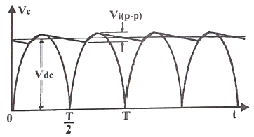
- 다이오드에 흐르는 전류파형
- 부하를 개방하였을 때 다이오드 양단의 전압파형
- 커패시터 필터의 입ㆍ출력 전압파형
- 커패시터 필터를 개방 하였을 때 부하 양단의 전압파형
(정답률: 55%)
14. 다음 회로에서 Rs = 1KΩ, Rf = 10KΩ일 때 출력 전압 Vo는 몇 V 인가?
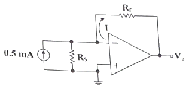
- -10
- -5
- 5
- 10
(정답률: 53%)
15. 변압기를 사용하지 않는 전력 증폭회로에서 push-pull 회로의 조건으로 거리가 먼 것은?
- 두 입력의 크기는 같을 것
- 위상차는 180° 일 것
- B급에서 동작 할 것
- 전원 효율이 50% 이하 일 것
(정답률: 60%)
16. 펄스 변조방식에 관한 설명 중 틀린 것은?
- PPM : 신호 레벨에 따라 펄스의 위상을 변화시키는 것
- PNM : 신호 레벨에 따라 펄스수를 변화시키는 것
- PAM : 신호 레벨에 따라 펄스의 진폭을 변화시키는 것
- PWM : 신호 레벨에 따라 펄스열의 유무로 2진 부호화하는 것
(정답률: 65%)
17. 부귀환 증폭기의 전압이득이
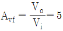
이고, 귀환을 걸지 않을 때 0.2V의 입력으로 출력 10V를 얻었다. 부귀환 증폭기의 귀한율 β의 값은?- -0.18
- -0.22
- -0.32
- -0.43
(정답률: 42%)
18. π형 필터에서 리플 함유율을 작게 하는 방법으로 틀린 것은?
- L을 크게 한다.
- C를 크게 한다.
- 주파수를 낮게 한다.
- RL 을 크게 한다.
(정답률: 58%)
19. 원자핵 주위의 궤도에 있는 전자 중 에너지에 의해 최외각에 있는 가전자를 잃는 과정은?
- 이온화
- 자유전자
- 공유결합
- 에너지 준위
(정답률: 59%)
20. 컬렉터 특성 곡선 상에 그려지는 이상적인 직류 부하선의 설명으로 옳은 것은?
- VCE(cutoff=VCC점과 IC(SAT)점을 연결한다.
- 직류 동작점 Q 와 포화점을 연결한다.
- 직류 동작점 Q와 차단점을 연결한다.
- β = 0 이 되는 점들을 연결한다.
(정답률: 48%)
2과목: 전기자기학 및 회로이론
21. 그림과 같이 유전율이 ε(F/m)인 유전체를 넣은 무한장 동축 원통 도체에서 내부 원동도체(A)에 +λ(C/m), 외부 원동 도체(B)에 -λ(C/m)의 전하를 주었을 때 중심축에서 r(m)(a≤r≤b) 떨어진 P점에서의 전속밀도(C/m2)는?
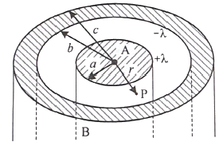
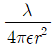
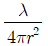
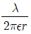
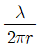
(정답률: 42%)
22. 공기 중에 무한 평면 도체로부터 거리 d(m)인 곳에 점전하 Q(C)가 있을 때, Q와 무한 평면도체 간에 작용하는 힘은 몇 N 인가?
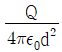
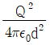
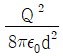
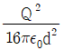
(정답률: 45%)
23. 맥스웰(Maxwell)의 전자방정식 중 일반적인 전자계에서 성립하지 않는 식은? (단, D는 전속밀도, B는 자속밀도, E는 전계의 세기, H는 자계의 세기, ρ는 전하밀도, Jc는 전도전류밀도이다.)
- div D = ρ
- div B = 0
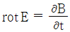
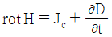
(정답률: 51%)
24. 내구의 반지름이 3cm 이고, 외구의 반지름이 5cm 인 동심 구도체 콘덴서의 외구를 접지하고 내구에 V=1500V의 전위를 가했을 때 내구에 충전되는 전하량은 약 몇 C 인가? (단, 콘덴서 내부는 공기로 채워져 있다.)
- 1.25×10-8
- 1.5×10-8
- 2.5×10-8
- 3.6×10-8
(정답률: 52%)
25. 그림과 같은 길이가 l, 단면적이 S, 저항률이 ρ인 도체 내의 정상 전류 I가 흐르고 있을 때 옴의 법칙에 의한 도체 양끝 간의 전위차 V는?
- 전류와 길이에 비례하고, 단면적에 반비례한다.
- 전류와 길이에 반비례하고, 단면적에 비례한다.
- 전류, 길이, 단면적에 비례한다.
- 전류, 길이, 단면적에 반비례한다.
(정답률: 59%)
26. 진공 중에서 20 nC/m2의 전하밀도를 가진 무한 평면 도체 판이 z=10m에서 x-y 평면과 나란하게 위치해 있을 때 원점에서의 전계의 세기 E(V/m)는? (단, az는 단위벡터이다.)
- -18πaz
- -72πaz
- -360πaz
- -720πaz
(정답률: 50%)
27. 전자유도에 의해서 회로에 발생하는 기전력에 관한 법칙은?
- 옴의 법칙
- 가우스 법칙
- 암페어 법칙
- 패러데이 법칙
(정답률: 66%)
28. 코일 속을 쇄교하는 자속의 변화에 의해 유도기전력의 크기가 E1만큼 유기되고 있다. 코일의 면적을 2배, 자속밀도의 주파수를 2배로 각각 증가시켰을 때 유도 기전력의 크기가 E2만큼 유기되었다. 유도 기전력의 크기 E1과 E2의 관계는?
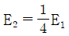
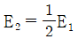
- E2 = 2E1
- E2 = 4E1
(정답률: 41%)
29. 도체 표면으로 갈수록 전류밀도가 커지고 중심으로 갈수록 전류밀도가 작아지는 현상을 무엇이라 하는가?
- 톰슨효과
- 표피효과
- 핀치효과
- 홀효과
(정답률: 54%)
30. 진공 중에 10-10C 의 점전하가 있을 때 점전하로부터 2m 떨어진 점에서의 전계의 세기는 몇 V/m 인가?
- 2.25×10-1
- 4.50×10-1
- 2.25×10-2
- 4.50×10-2
(정답률: 45%)
31. 다음 회로에서 스위치(S)를 닫았을 때, t초 후에 대한 설명으로 틀린 것은? (단, Qo는 C에 충전되어 있던 전하량이다.)
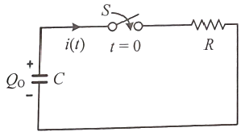
- t=0 때 R에 걸리는 전압은 Qo/C (V)이다.
- t=0 때 전류 i(0) = Qo/CR (A) 이다.
- t=∞ 때 전류는 0(A) 이다.
- t=∞ 때 커패시터의 전압은 Qo/C (V) 이다.
(정답률: 38%)
32. 4단자 회로망의 4단자 정수 중 출력 단락 시 역방향 임피던스를 나타내는 것은?
- A
- B
- C
- D
(정답률: 57%)
33. 회로의 전압 및 전류가 V = 10∠60° (V), I = 5∠30° (A) 일 때, 이 회로의 임피던스 Z(Ω)는?
- √3 + j
- √3 - j
- 1 + j√3
- 1 – j√3
(정답률: 50%)
34. 어떤 회로에 가한 전압이 E(V)일 때 흐르는 전류가 I(A)이고 전압, 전류간의 위상차가 π/6 일 때, 다음 중 틀리게 표시된 것은? (단, 전압과 전류는 실효값이다.)
- 무효전력 :
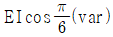
- 유효전력 :
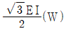
- 피상전력 : EI(VA)
- 역률 :
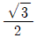
(정답률: 48%)
35. 구동점 임피던스 함수에 있어서 극점에 대한 설명으로 틀린 것은?
- 단락회로 상태를 의미한다.
- Z(s) = ∞ 가 되는 s값을 극점이라 한다.
- 극점은 s평면에서 음의 실수 범위에 존재할 수 있다.
- 일반적으로 극점은 s평면에서 x의 기호를 사용하여 표시한다.
(정답률: 43%)
36. 다음의 이상 변압기에서 V1=100V, N1\200 일 때, V2=12V가 되도록 하는 2차 코일의 수 N2는?
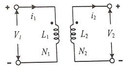
- 10
- 12
- 20
- 24
(정답률: 62%)
37. 테브난의 정리와 쌍대의 관계에 있는 정리는?
- 보상의 정리
- 노턴의 정리
- 중첩의 정리
- 밀만의 정리
(정답률: 55%)
38. 다음 회로를 노튼의 동기회로로 변환할 때, 전류원의 크기와 1Ω에 걸리는 전압은?
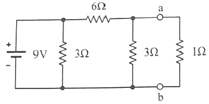
- 1A, 1V
- 1.5A, 1V
- 1A, 2V
- 1.5A, 2V
(정답률: 46%)
39. RLC 직렬회로에서 반전력 주파수 f1, f2가 각각 770 kHz, 810 kHz일 때, 이 공진 회로의 선택도 Q는?
- 15.95
- 19.75
- 20.5
- 25.75
(정답률: 47%)
40. Ae-at의 라플라스 변환은?
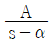
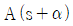
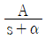
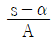
(정답률: 55%)
3과목: 전자계산기일반
41. 다음 그림의 연산 결과는?
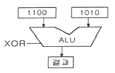
- 0111
- 0110
- 1001
- 1010
(정답률: 60%)
42. 전가산기에서 입력 A = 1, B = 1. Cin = 0 일 때, 출력 S(sum)와 Cout(carry out)의 값으로 옳은 것은?
- S = 0, Cout = 0
- S = 0, Cout = 1
- S = 1, Cout = 0
- S = 1, Cout = 1
(정답률: 58%)
43. 인터럽트를 거는 장치가 자신의 인터럽트 벡터를 데이터 버스에 실어 보냄으로써 CPU가 장치를 알아낼 수 있도록 하는 방식을 무엇이라고 하는 가?
- polling
- daisy chain
- polled interrupt
- vectored interrupt
(정답률: 42%)
44. 인출 사이클(Fetch Cycle)에서 가장 먼저 이루어지는 마이크로 오퍼레이션은?
- MBR ← PC
- PC ← PC+1
- IR ← MBR
- MAR ← PC
(정답률: 57%)
45. 10의 보수를 이용하여 72532(M)-3250(N)을 계산하려고 한다. N에 대한 10의 보수는?
- 6750
- 6749
- 96750
- 96749
(정답률: 44%)
46. address line이 16개인 CPU의 직접액세스가 가능한 메모리 공간은 몇 KByte 인가?
- 8
- 16
- 32
- 64
(정답률: 48%)
47. SRAM에 비해 DRAM의 특징이 아닌 것은?
- 전력 소모가 적다.
- 재충전이 필요하다.
- 동작 속도가 빠르다.
- 단위 면적당 기억용량이 크다.
(정답률: 55%)
48. 개인용 컴퓨터(PC)를 구성 및 운용하는데 반드시 필요한 장치가 아닌 것은?
- CPU
- RAM
- HDD
- Plotter
(정답률: 63%)
49. 다음 덧셈 명령 가운데 2 주소(address) 명령 형식에 해당하는 것은?
- ADD R1, R2, R3
- ADD R1, R2
- ADD R1
- ADD
(정답률: 62%)
50. 입출력 동작이 시작되어 끝날 때까지 하나의 입출력 장치가 전용으로 쓸 수 있는 채널로서 고속장치에 주로 쓰이는 채널은?
- Selector Channel
- Multiplexer Channel
- Block Multiplexer Channel
- DMA
(정답률: 50%)
51. C언어에서 사용되는 예약어가 아닌 것은?
- union
- const
- virtual
- switch
(정답률: 47%)
52. 마이크로컴퓨터와 마이크로프로세서에 관한 설명 중 틀린 것은?
- 마이크로프로세서는 3개이상의 (V)LSI칩으로 구성되어 마이크로컴퓨터에 사용된다.
- 마이크로프로세서는 주기억장치에 저장되어 있는 명령을 해석하고 실행하는 기능을 한다.
- 최초의 마이크로프로세서는 1971년 미국 Intel사가 개발한 4004이다.
- 마이크로컴퓨터의 중앙처리장치는 마이크로프로세서로 되어 있다.
(정답률: 47%)
53. D플립플롭 3개를 이용한 frequency divider의 출력 주파수(fout)와 입력주파수(fin)의 관계는?
- fout = fin/3
- fout = fin/8
- fout = fin×8
- fout = fin×3
(정답률: 44%)
54. 어느 컴퓨터의 기억 용량이 1Mbyte이다. 8 bit 단위로 데이터를 저장할 때 필요한 주소 선의 수는?
- 8개
- 10개
- 20개
- 28개
(정답률: 38%)
55. 다음 중 폰 노이만(Von Neumann)형 컴퓨터의 특성이 아닌 것은?
- 주 기억장치의 구조가 1차원으로 구성되어 있다.
- 기본적으로 명령어를 수행하는 것이 순차적이다.
- 연산의 의미가 데이터에 있다.
- 프로그램 내장 방식이다.
(정답률: 47%)
56. 반가산기에서 X = 0, Y = 1을 입력할 때, 출력 올림수(C)와 합(S)은?
- C = 0, S = 0
- C = 1, S = 0
- C = 0, S = 1
- C = 1, S = 1
(정답률: 60%)
57. 다음 중 출력 장치는?
- 조이 스틱
- X-Y 플로터
- 스캐너
- 마우스
(정답률: 62%)
58. 프로그램의 서브루틴 호출과 복귀를 처리할 때 이용되는 것은?
- 스택
- 큐
- ROM
- 누산기
(정답률: 53%)
59. 시프트 레지스터(shift register)에 있는 임의의 2진수를 4번 왼쪽으로 자리이동 (shift-left) 하였다. 이 때 결과로 옳은 것은? (단, 새로운 비트는 0 이다.)
- (원래의 수) × 4
- (원래의 수) × 16
- (원래의 수) ÷ 4
- (원래의 수) ÷ 16
(정답률: 53%)
60. 10진수 4를 2421 코드로 표현하면?
- 0100
- 1001
- 1011
- 1010
(정답률: 55%)
4과목: 전자계측
61. 증폭기에서 전력이득을 dB로 표현할 때, 식으로 옳은 것은? (단, P1은 입력 전력, P2는 출력 전력이다.)
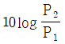
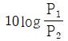
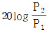
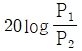
(정답률: 42%)
62. 플레밍의 왼손법칙을 이용하여 만든 계기는?
- 영구 자석 가동코일형 계기
- 엉구 자석 정전형 계기
- 주파수계
- 디지털 멀티미터
(정답률: 58%)
63. 모니터 상에 나타난 변조파형의 최소치 B가 2mm 일 때, 변조도는 90% 이다. 이 때 최대치 A는 몇 mm 인가?
- 35
- 38
- 40
- 42
(정답률: 47%)
64. 다음 중에서 회로의 전류 측정방법으로 틀린 것은?
- 도선 외착형((導線 外着型) 측정 프로브(probe) 사용
- 직렬로 저저항 삽입, 전압 강하 도출법
- 전류계를 직렬로 연결한다.
- 전류계를 병렬로 연결한다.
(정답률: 49%)
65. 다음 회로를 3전압계법으로 부하(RL)의 전력을 측정한 식은?
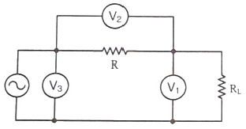
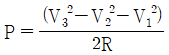
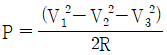
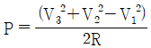
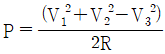
(정답률: 42%)
66. 최대 눈금 50mV, 내부저항 10 Ω의 직류전압계에 590Ω의 배율기를 사용하여 측정할 때 최대 눈금은 몇 V가 되는가?
- 2.95
- 3
- 3.⑤
- 3.1
(정답률: 44%)
67. 내부 저항이 무한대인 전압계로 단자 A-B간의 전압을 측정하면 몇 V 인가?
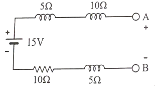
- 2
- 8
- 12
- 15
(정답률: 57%)
68. 고주파 측정에 가장 적절한 것은?
- 진동편형 주파수계
- 헤테로다인 주파수계
- 가동 철편형 주파수계
- 캠벌 브리지
(정답률: 48%)
69. 폭이 10 µs, 주파수가 500 Hz인 Pulse의 전력을 열량계로 측정하여 5W를 얻었다. 이 Pulse의 최대 전력은?
- 1 KW
- 2.5 KW
- 4 KW
- 10 KW
(정답률: 27%)
70. 다음 중 상호 인덕턴스를 비교하는 방법으로 가장 적절한 측정법은?
- 하트숀(Hartshorn) 브리지법
- 맥스웰(Maxwell) 브리지법
- 헤이(Hay) 브리지법
- 헤비사이드(Heaviside) 브리지법
(정답률: 37%)
71. 어떤 전파를 레헤르선으로 측정하니 인접한 전압이 최대로 되는 점 사이의 거리가 1.5m 이었다. 이때 주파수는 몇 MHz 인가?
- 100
- 150
- 200
- 250
(정답률: 31%)
72. 다음 콜라우시 브리지(Kohalraush Bridge)에서 E1과 E2 사이의 저항을 R1(Ω), E2와 E3 사이가 R2(Ω), E3와 E1 사이가 R3(Ω) 이라면 E1은? (단, E1은 피 측정 접지저항, E2, E3는 보조 접지이다.)
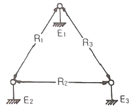
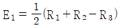
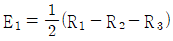
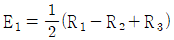
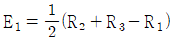
(정답률: 44%)
73. 캠벌법은 주로 무엇을 측정하는가?
- 정전용량
- 저저항
- 고저항
- 상호 인덕턴스
(정답률: 54%)
74. 다음 중 소인 발진기(sweep oscillator)의 용도로 틀린 것은?
- 주파수 변별기의 특성 측정
- 송신기의 DC전류 특성 측정
- 광대역 증폭기의 특성 측정
- 수신기의 중간주파 특성 측정
(정답률: 40%)
75. 최대 측정값이 20V 이고 내부저항이 5Ω인 전압계에 3mA 전류가 흐른다면 표시전압은?
- 5 mV
- 10 mV
- 15 mV
- 20 mV
(정답률: 54%)
76. 오실로스코프의 내부 구성도에서 ㉠에 알맞은 것은?
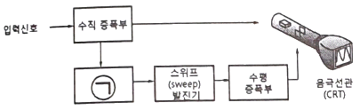
- 적분회로
- 동기 신호 발생기
- 차동증폭회로
- 입력전환회로
(정답률: 51%)
77. 회로 내에서의 두 점에서 신호의 진폭과 위상차를 측정하는 것으로 증폭기의 이득과 위상천이, 4단자망 파라미터 등의 측정에 사용되는 계기는?
- 백터 전압계
- Q 미터
- 차동 전압계
- 적산 전력계
(정답률: 43%)
78. 다음 중에서 인덕턴스의 측정에 사용되는 브리지의 종류가 아닌 것은?
- 맥스웰 브리지
- 헤이 브리지
- 헤비사이드 브리지
- 윈 브리지
(정답률: 48%)
79. 주파수가 같은 두 입력에 대한 리사쥬 도형을 관찰할 결과 원이 나타난 경우 위상차는 얼마인가?
- 0°
- 45°
- 90°
- 180°
(정답률: 55%)
80. 다음 중 직류 검류계가 아닌 것은?
- 가동코일형 검류계
- 가동자침형 검류계
- 충격 검류계
- 진동 검류계
(정답률: 42%)